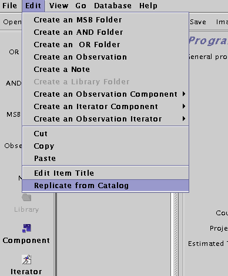
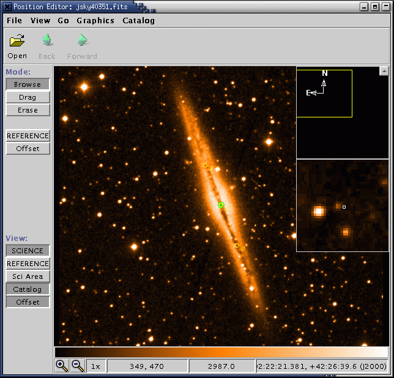

If you are viewing this document through the JCMT-OT Help menu, there may be a more up-to-date version on our web site at http://www.jach.hawaii.edu/JAC/software/jcmtot/. If you are viewing this documenent on our web pages, you can view a printer-friendly version at here.
If, after reading this guide you have any questions about preparing your observations, email jcmtot@jach.hawaii.edu Heap praise or abuse on the author of this document at frossie@jach.hawaii.edu
Ok, let's do this. Type jcmtot on your unix terminal.
You will see two windows pop up. One has a colour picture of the telescope - that's the JCMT root window. You can use its menus to open and save files and fetch programs from our database. The window with the JCMT line drawing, which pops on top of the root window, provides a shortcut to some of the most common startup actions, so we call that the startup screen:
For now, press "Create New Program" on the startup screen. The startup window will be replaced by an science program window.
Currently, the only thing in your program panel is a "Science Program" line. We'll add things to it later. For now, take the time to fill in its details in the Science Program editor on the right. The most important field here is the Project ID field. You have to get this right otherwise you will not be able to submit your program to us. Your project ID is what you were assigned when you submitted your proposal for telescope time. It is of the form m03a followed by a country letter and proposal number. You can also find your country and proposal number in our web page of time allocations.

Also on the panel is an estimate of the total time the specified program will take, which is currently 0 since we haven't specified any observations yet.

You will be prompted for a filename and so on:

The file format is XML, which is a text (not binary) format that you can read in later with the OT, or email to your collaborators. If you have a question, you can also email your file to us along with your question.
You might have noticed that the title of your Science Program was italics and now it is normal font. When you edit a component of your Science Program it's title changes font to indicate that you need to save your work.
Since SCUBA is best used in a few well-understood ways, we have prepared for you a library of MSBs that you can add to your Science Program and modify to your requirements. In the rest of the document I'll show you how to specify a 850/450 jiggle map of your target. If you follow this example through, you should be able to use any of the other library MSBs with no problems.

A window will pop up containing a note and list of folders. The little switch on the left of the folder icons is an open/close toggle switch. Push open the folder titled "SCUBA MSBs" and then open the folder entitled "Jiggle Map MSBs". The results of those steps are illustrated below:

Inside the the "Jiggle Map MSBs" folder are a list of MSBs. Select the 850/450 MSB and click "Copy" on the toolbar.

Now go back to your Science Program window, and click on "Paste". The MSB will be dropped into your science program. Congratulations! You're now well underway. Now is a good time to save your progress, so use the File->Save option in your Science Program window and carry on.
Click on the title of the MSB. This will activate the MSB editor panel on the right section of your window.

The properties of an MSB are very simple.

We'll now go through these individually.

You probably don't need to change anything here. The default value of tau of "Allocated" means that your MSB can be scheduled when the tau is in the range that was specified by your TAG for your project The default value of the sub-millimetre seeing is "Don't Care". If you think you need to change these values, click on the note entitled "Note: Site Quality" which contains a lengthy explanation, but don't get bogged down in this for now.

You probably don't need to change anything here. Since you started out by copying a 450/850 jiggle map out of the library it is already set to use the 450W/850W array. Just note that this is the place where you can specify which filter and which array or bolometer to use.

The properties of an observation are quite simple. It has a name and also an estimate of that observation's duration. The tickbox marked "Flag as calibration" is fairly self-explanatory but has some important implications. When this box is ticked it means:

Lots of stuff here, but no need to panic. First, there is another note, since we do try and make our library MSBs self-documenting. If you actually want to use this or any other of our library MSBs for real make sure you read all the notes! After the note there is what we call a sequence iterator (more about this below in Components, Iterators And All That) The sequence iterator doesn't do anything per se, so you can ignore it for the moment, but it is important to note that it represents the sequence of events at the telescope.
Inside it are a chop iterator and 5 "eyes". Eyes?? Time for another aside.
By clicking on the various eyes you can see their properties but you don't need to change any of those now.

The chop iterator has a list of chop configurations (in this example only one 120 arcsecond chop, but for scan maps there are typically six). Each chop needs to be specified by a throw, an angle, and co-ordinate frame of the angle. In this example the frame is AZEL (Azimuth Elevation) but other common options are TRACKING (RA & Dec) or FPLANE (Focal Plane, ie Nasmyth for SCUBA).

At first glance you might thing that what you have to do here is enter your target name and position and you can certainly do that. However you can do even less than that - if you are using a machine with an Internet connection try just entering the name of your target (in our example the IRAS source 18592+0108) and hit "Resolve Name".
After a brief pause the RA and DEC co-ordinate fields are populated with the SIMBAD co-ordinates for the source. The SIMBAD name for the source will also be indicated next to the "Resolve Name" button. And of course, double check that the co-ordinates are those you intend to observe.
But wait - that's not all.

A whole new window will pop up - this is the position editor. Looks a bit boring at the moment though, with just a small green crosshair in the middle. Let's make it a bit more interesting - go to Catalog menu and into the Image Servers item and chose a Digital Sky Survey near near you:

It's now full of stars. The display application, by the way, is is based on JSky, for those familiar with it.
The DSS may not be the most useful survey for planning sub-millimetre observations, but you can read in any FITS image with an appropriate WCS header using Open under the File menu. You can also fetch a FITS image over the Web. In the screenshot below I have loaded the SCUBA commissioning scan map of W48 (image courtesy Tim Jenness). If you have an Internet connection, go to the File menu, select "Open URL...:" and type in the following URL: http://www.jach.hawaii.edu/JAC/software/jcmtot/w48.fits or download the image by clicking on the link and and use File->Open to read it in:

You will then see the DSS image replaced with the sub-millimetre image.
A short technical note if you are planning on generating
your own image for import: if you want to import a
SCUBA map in NDF format, convert it to FITS by using the starlink
convert utility with the following arguments:
ndf2fits encoding=FITS-IRAF bitpix=32 comp=D
If you have difficulty despite doing this, let us know.
As I mentioned before, the green cross-hair is the position of your science co-ordinates. Click on the button on the left side of the position editor entitled "Sci Area". The circle that is drawn is the SCUBA field of view.
Now for the useful thing I mentioned earlier. While leaving the position editor window open, go back to your science program window and click on your chop iterator that is inside your science observation. Now look at the position editor. The chop beams and the area in which they will rotate during integration are drawn. Well, that's no good - we're chopping onto bright stuff!
This is where the position editor comes into its own. We are going to use it to specify where exactly we would like to chop. In the chop iterator, use the drop down menu to change the chopping co-ordinate frame from AZEL to TRACKING (i.e. RA/DEC). You will notice that in the position editor the uncertainty circles have disappeared, since we will always chop in the same position in the sky:

Now back in the position editor, click on the Drag button on the upper left side of the window. The click on the centre of one of the chop beams in the display and drag it away from the emission:

You will note that the values in the chop iterator have automatically changed to reflect the new chop throw and angle values. Neat, eh? If you are going to do this for real and have a calibration observation in the same MSB, don't forget that the chop in your calibration observation should be the same, so you should update the calibration chop iterator with whatever values you decided on for your science calibration.
You can also click on the target component and use Drag to change your science co-ordinates if you wish.

The repeat iterator acts on things that are inside the repeat iterator (i.e. indented under it) in turn. So if you set it to 2, your science observation consists of a pointing followed by two jiggle maps. How many data files will this result in? Three!
Now you can see how your time usage builds up. Working our way inside out (and bottom to top):
 The Science Program will give you the estimated time of all
MSBs inside it including the number of repeats. So if you have a
1hr MSB (as in this example) and you set the MSB counter to 2,
your MSB estimated time will be 1hr and your Science Program
time will show 2hrs.
The Science Program will give you the estimated time of all
MSBs inside it including the number of repeats. So if you have a
1hr MSB (as in this example) and you set the MSB counter to 2,
your MSB estimated time will be 1hr and your Science Program
time will show 2hrs.

You may then click on the note itself, which allows you to tick the
"Show to observer" option and enter your comments. This will also turn
the note red in your science programme window.

If you prefer, you can also put in an individual note in each MSB. If there is a "Show to observer" note inside an MSB, it will be shown instead of any note specified at the science program level (see A note about placement) as only one note can be shown during observing.

A little window will pop up using the Project ID that you put into your Science Program at the start (see Your science program). It will also ask you for a password. You can get a password from our password generator at http://omp.jach.hawaii.edu/cgi-bin/issuepwd.pl . If you forget it, go there to get another one. If you are PI on more than one project you'll need a password per project so that you can share it with your different sets of Co-Is. The password you get will also allow you access to your Feedback Area to check on the progress of your project, double-check your MSBs, retrieve your data and exchange views with our staff. Check it out. Both the above links can also be found off on OMP home page http://omp.jach.hawaii.edu
When you do get your password and submit your program, you will receive a summary of all the MSBs contained in your program. Check to make sure that everything is okay. If the are major problems with you science program the database may complain and refuse to accept the submission. If you don't understand what the problem is, email us along with a copy of the problematic project, but check the Frequently Asked Questions for hints first. One last thing: don't forget to save your Science Program to your local file too. But - always start a new session by fetching the program from our database before making any changes, since our system modifies your science program to indicate which observations have been observed.
Goodbye, and clear skies.
During flexible observing, the observer/TSS will run a tool called JCMT-QT (Query Tool) that allows them to browse our database for suitable MSBs. The QT by default returns as yet unobserverd MSBs ranked by TAG priority containing targets that are actually observable, whose site quality requirements match the current conditions and whose projects still have allocated time left. However the observer/TSS is able to use the QT to retrieve any submitted MSB at their discretion.
When an MSB is selected for actual execution, the Query Tool can be used to retrieve it from our database. The observer/TSS is then presented with a list of the observations in that MSB and given the opportunity to remove redundant calibrations from the MSB or to defer them until a calibrator becomes available. When they are satisfied that the MSB is suitable for execution they send it off to the instrument-specific control system.
In SCUBA's case, the control system used to consist of a VMS-based queue. From 2002B, this will be replaced by new unix-based queue software. A program called the Translator will convert the MSB from its stored form into one or more SCUBA ODFs.
The ODFs will then be placed in a queue that can be processed. As the queue works its way down the ODF list it will take any sensible course of action, such as prompting the observer/TSS with a list of suitable pointing sources if the MSB includes a pointing with "Automatically determine target" selected.
After the ODFs have been carried out the MSB is marked as done and will not be rescheduled unless it is resubmitted from the JCMT-OT or marked Undone via the project feedback system.
The aspect of the MSB you most want to think about is its length. Let's say you have been allocated one shift (8 hours) for a single source. Now, you could submit a single 8-hour MSB if you wanted. But that would be a very silly thing to do. For one thing, if your source is not up for more than eight hours, it would never be scheduled as our software would detect that it would set before the MSB could be completed. But even if your source was observable for 8 hours solid, the observer won't chose to undertake it except at the very beginning of shift, which vastly decreases your scheduling opportunities.
At the other end of the scale, using up your 8 hours as 48 10-minute MSBs is a grossly inefficient use of telescope time. If the 48 MSBs happen to be scheduled on different nights the time spent on overheads will be huge. On the other hand, if they all happen to be scheduled one after the other they would have to be sent to the acquisition one by one, thus driving the observer insane.
The golden mean? A 45-to-90 minute MSB, with 30-to-120 minutes still quite resonable. If you believe your program cannot be sensible constructed in MSBs that fall in that duration range please consult us for ideas.
Second, time estimates are used to provisionally debit remaining time during the night to keep a running tab on projects' use of their allocation. However the final time accounting is done the next day based on the actual time used by a project as derived from the data files and logs. If you find you still have time left after that you can submit an MSB to use it up.
For example, look at the example below of a Science Program containing three MSBs - focus on the location of the two Site Quality components:

What does this mean? The first Site Quality component is on the same level of indentation, and therefore the same level of branching, as the MSBs. If that was the only Site Quality component present it would apply to all MSBs in the Science Program. As it is, the first MSB has a site quality inside it (technically: within its scope). So the first MSB will be scheduled using the criteria of the Site Quality component inside it, and the second and third MSBs will use the first Site Quality component since they lack one of their own. The technical term for this behaviour is "inheritance" for those familiar with it already.
Start with a science program which contains a template MSB with a blank target component (for example, a template MSB you have retrieved from the SCUBA library). Your catalog file should be of the format:
PKS0106 01 08 38.771 + 01 35 00.32 RJ 3C84 03 19 48.160 + 41 30 42.10 RJ 3C120 04 33 11.096 + 05 21 15.62 RJ PKS0438 04 40 17.180 - 43 33 08.60 RJThe catalog format is not blank space sensitive - sourceplot and JCMT catalog files will work as is, provided they do not contain planets or objects with orbital elements.
Under the edit menu, there is an option called "Replicate from catalog". Choose this action:

A file selector window will pop up which allows you to choose the location of the catalog file. Once you have done this, the OT will contact our site and after a short delay will pop up a new science programme window containing multiple MSBs. So if you had an MSB with one blank target component and a catalog file with 12 sources, you will get back a science programme with 12 MSBs, whose target components have been filled in using the information from your catalog.
Of course you may have to tweak the MSBs further, such as giving them more informative titles and tweaking the number of integrations on each source.

The scheduling constraints component allows you to:

This MSB is identical to the one described in the main tutorial except that it contains an extra item, the offset iterator. The offset iterator (like the chop iterator) allows you to specify one or more telescope positions as offsets from your science base position. You have two choices - you can enter arbitrary positions by hand, or you can ask it to create a grid for you in a fixed pattern.
For example, to create a 1x3 grid whose points are separated by 120 arcseconds centered on the base co-ordinates:

The initial and subsequent offsets from the base position are then displayed:

You can also specify a rotation for the grid by entering a PA - below I have entered 114 as the rotation. Note that the list will show the absolute grid offsets: to see the rotated offsets, hold down the "Display Rotated Offsets" button.

As with the chop iterator, you can visualise the positions by plotting your source in the position editor and then clicking on the offset iterator (see The position editor). This is how the 1x3 120 arcsecond grid with a 114 rotation displays with NGC891 as the target:

You can see the rotated offset positions (labeled 0, 1 and 2) lined along the edge of the galaxy. As with the chop positions, you can click on the "Drag" button and re-position the offsets at arbitrary points - the values in the offset iterator will automatically update to reflect the new placements. You will want to do this if you wish to map a source in a non-linear fashion.
Finally, there is a button on the offset iterator labeled "Set Spacing from Scan Area". This is in the cases where you have a scan map rather than a jiggle map inside your offset iterator. Press this button to use individual scan maps as tiles for mapping a much larger area. Note: It is generally a good idea to break an observation down so that a particular scan lasts for about half an hour; this is because if there is a major technical fault in the middle of a scan it is likely that the whole scan will be lost. So doing three 30-minute scan maps is better than doing one 90-minute one.